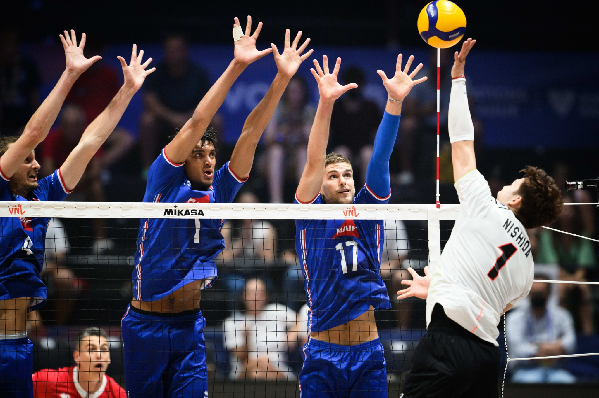
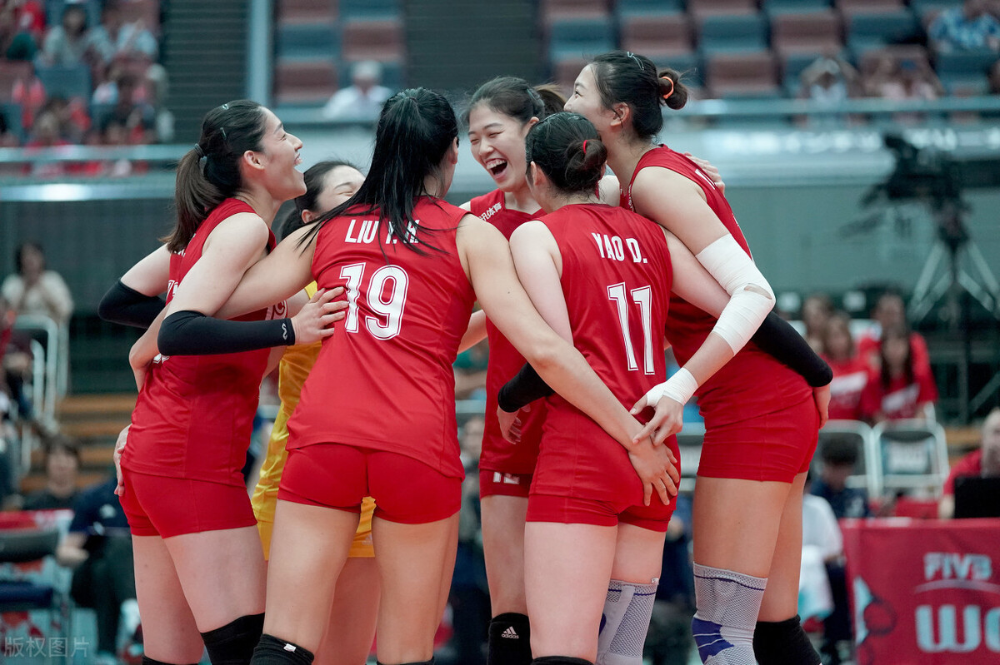

排球（Volleyball）是一种以发球、垫球、传球、扣球、拦网为主要得分的集体运动项目。它起源于19世纪末的美国，最初被称为“室内网球”。
排球比赛通常由两队各6名球员进行对战，每队轮流进行发球、接发球和防守。球员们通过传球、垫球和扣球等技巧，将球传递给队友，并试图将球击向对方场地，使其落地得分。比赛规则包括每局25分制、三局两胜等。
排球中有五个主要位置：主攻、接应、二传、副攻以及自由人。
主攻：主攻是球队进攻的主力，通常站在左侧位置。他们需要具备出色的攻击能力和跳跃能力，能够在前排和后排进行攻击。主攻手还需要具备良好的接发球能力和防守能力，以保证球队的稳定性。
接应：接应是球队的全能选手，通常站在后排左侧位置。他们需要具备出色的攻击、防守和接发球能力，能够在前排和后排进行攻击和防守。接应还需要具备良好的传球和组织能力，以保证球队的稳定性。
二传：二传是球队的组织者和传球专家，通常站在后排中间位置。他们需要具备出色的传球和组织能力，能够为队友提供最佳的传球。二传手还需要具备良好的防守和接发球能力，以保证球队的稳定性。
副攻：副攻手通常站在右侧位置，是主攻手的得力助手。他们需要具备出色的攻击能力和跳跃能力，能够在前排和后排进行攻击。副攻手还需要具备良好的接发球能力和防守能力，以保证球队的稳定性 。
自由人：自由人是球队的防守专家，通常穿着不同颜色的球衣。他们可以替换任何位置的队员，但只能在后排进行防守和接发球。自由人需要具备出色的防守和接发球能力，能够迅速反应和处理对方的攻击。
这些位置在排球比赛中扮演着不同的角色，每个位置的球员都需要具备相应的技能和能力，以便在比赛中发挥最大的作用。
